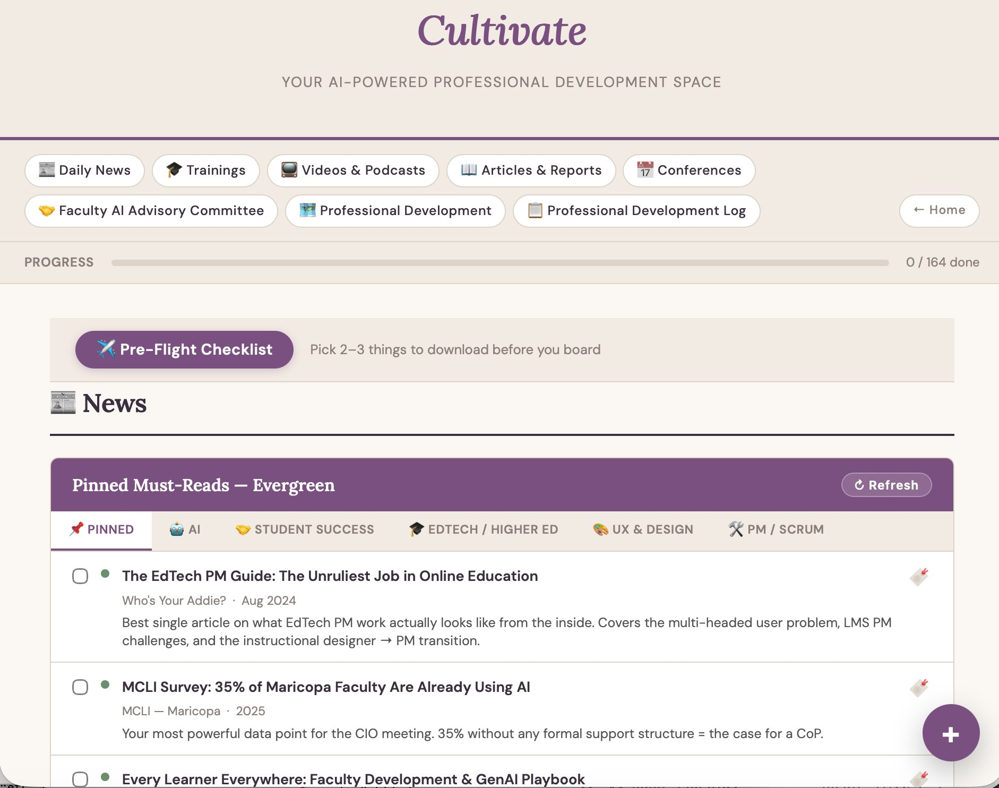
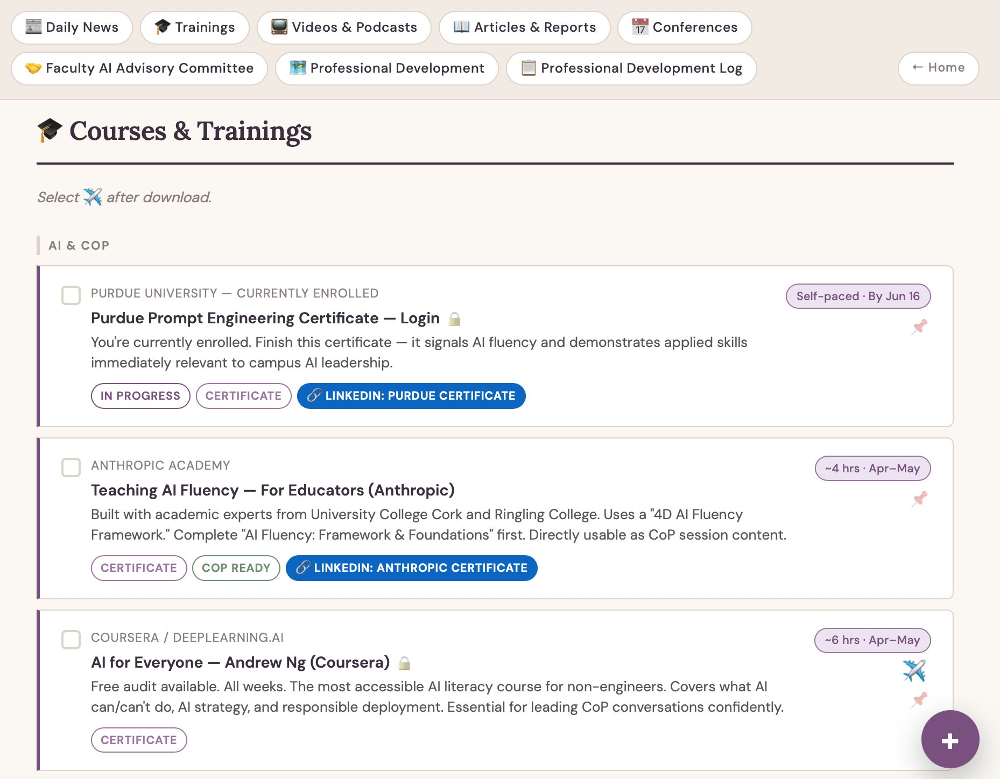
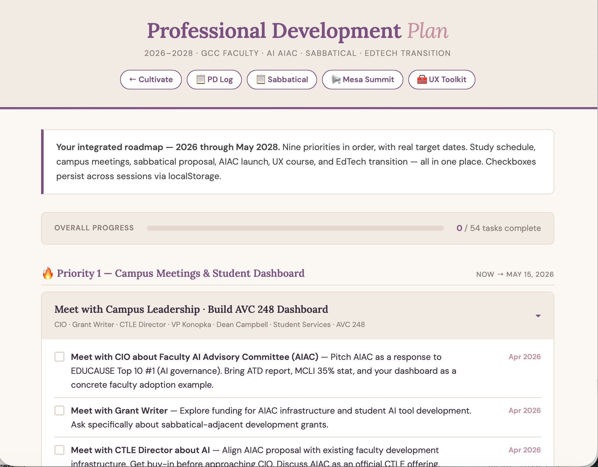
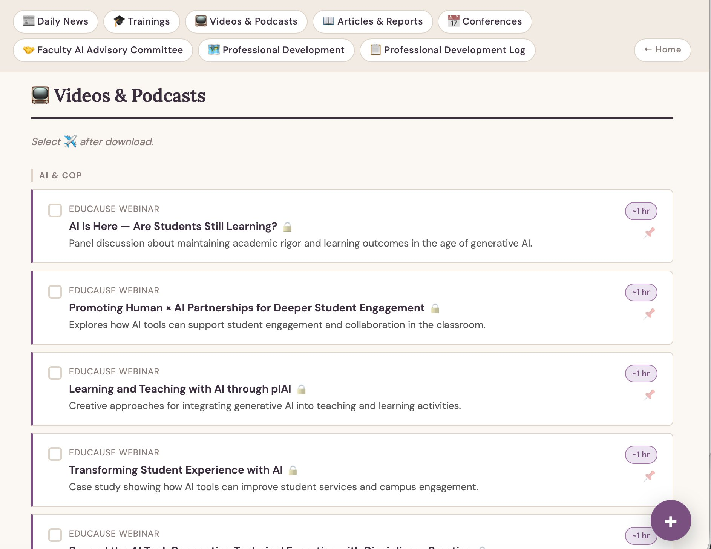
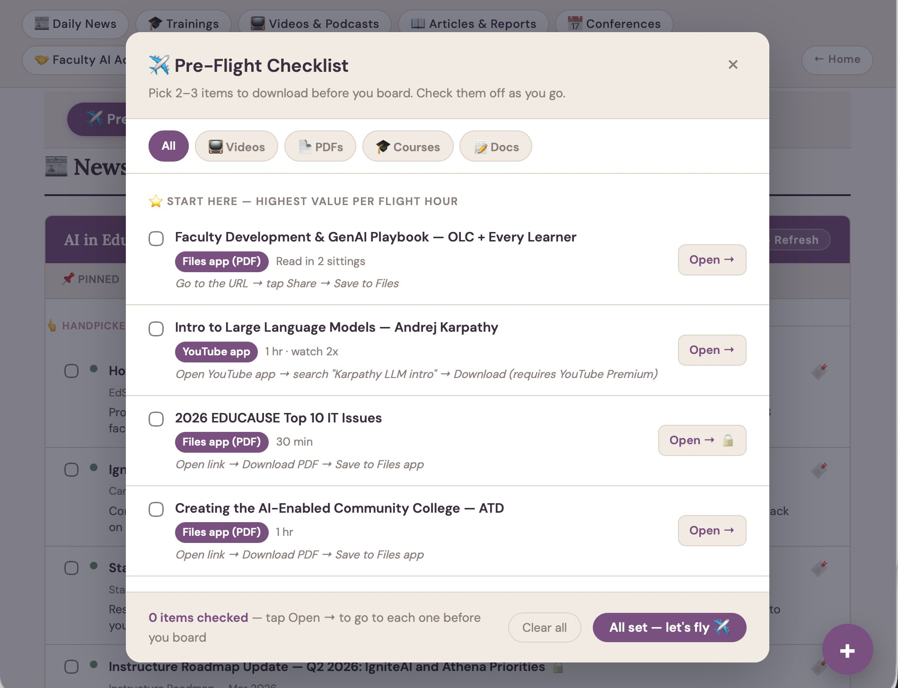

What this is
Cultivate is a personal learning environment (PLE) I built for my own professional development, a single dashboard that consolidates the resources, news, and planning tools I use daily as a faculty member exploring AI in education. It's grounded in connectivism and PLE theory from my 2017 MEd research, now realized as a working tool.
The dashboard runs as a suite of interconnected HTML files hosted on GitHub Pages. No server, no accounts, no dependencies. Everything stores locally on my device via localStorage, and key resources are downloaded for offline access, so the tool loads instantly and works without internet, including on my iPad during plane and train commutes.
How I use it

AI & EdTech News Feed
62 RSS sources, university AI labs, higher ed publications, UX and design outlets, and PM/Scrum resources, all fetched in parallel and classified by keyword into topic tabs. This is my primary source of professional news. I read it every morning.

Trainings, Videos & Conferences
88 curated cards across trainings, videos, articles, and conferences, each with estimated time commitments, deadline badges, and download tracking. Resources span AI foundations, prompt engineering, UX design, product management, and higher ed pedagogy.

Professional Development Roadmap
A priority-ordered, multi-phase PD plan with real deadlines, conference proposals, sabbatical prep, course development milestones, and skill-building targets. Tasks are checkable and tied to specific dates across the academic year.

Videos & Podcasts
Curated video content organized by topic, EDUCAUSE webinars on AI in higher ed, student engagement panels, and practical teaching demonstrations. Each card shows estimated time and a download indicator for offline viewing during plane and train commutes.

Pre-Flight Checklist
A modal that surfaces all downloadable content across the dashboard, PDFs, videos, courses, and documents, filtered by type, with one-tap links to save each item before boarding. Built for a 7-hour weekly commute where most work happens offline on an iPad.